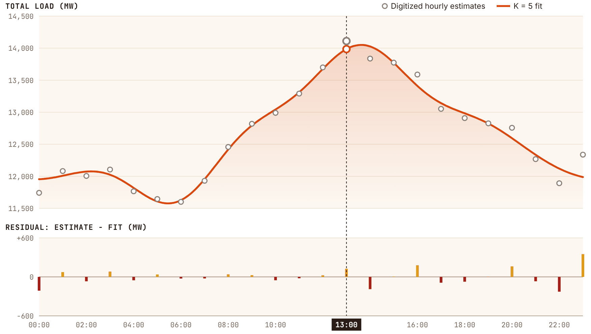
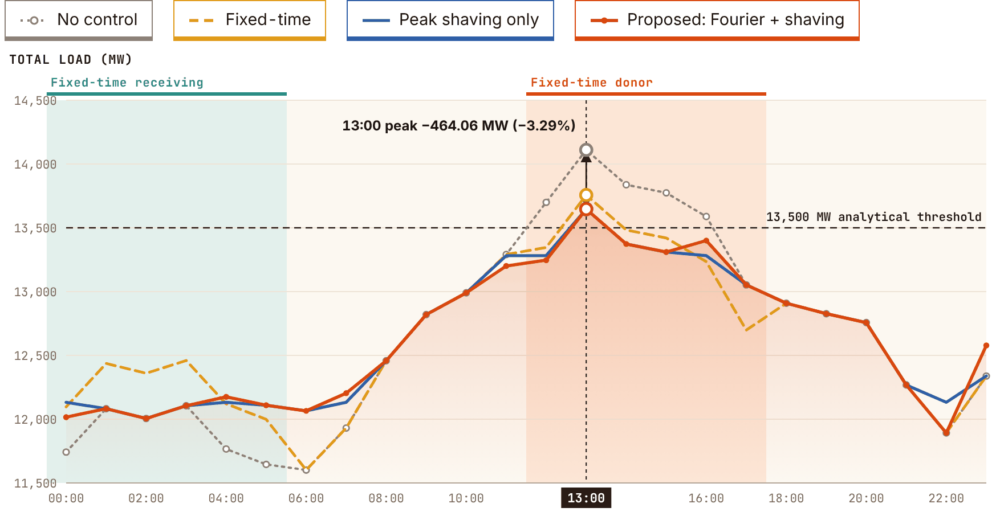
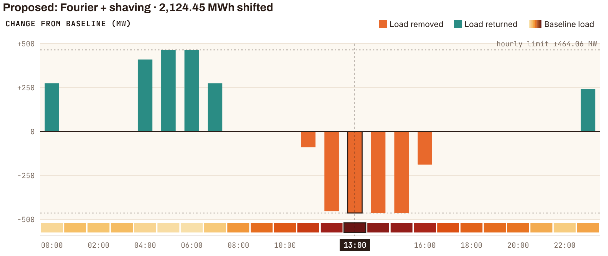
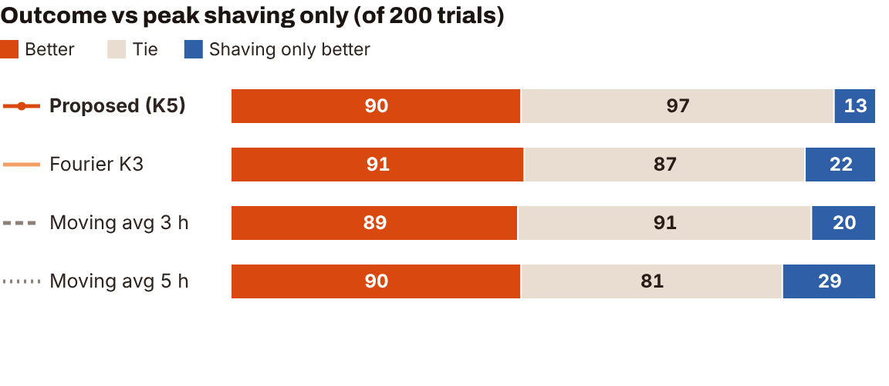
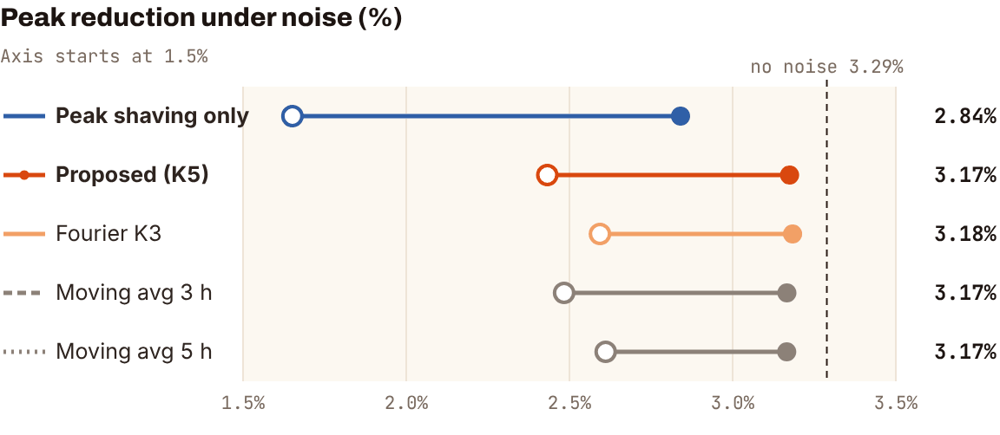

Harmonic Modeling of Air-Conditioning Demand Using Peak-Shaving and Fourier Decomposition Techniques
Department of Electrical Engineering, College of Engineering, Princess Nourah bint Abdulrahman University
Abstract
Air conditioning drives severe early-afternoon demand peaks on the Saudi grid.[1] This study applies Fourier series decomposition to 24 hourly values of Riyadh’s average summer total load in 2017[2] to characterize the daily peak and guide demand-response scheduling. The K = 5 reconstruction achieves an RMSE of 125.12 MW and explains 97.27% of hourly variation. Three methods are compared under the same 2,124.45 MWh shift budget: Fourier decomposition only, peak shaving only, and the proposed Fourier-guided peak shaving. Peak shaving only and the proposed method both lower the peak from 14,110.90 MW to 13,646.84 MW (3.29%) while conserving daily energy; peak shaving only produces the smaller hourly ramp. Under 3% synthetic noise the proposed method keeps more of the cut (3.17% vs 2.84% over 200 paired trials), although moving averages perform similarly. The results are an illustrative simulation, not a field validation.
Keywords: demand response · Fourier series · peak shaving · load shifting · Riyadh · smart grid
Introduction
Saudi Arabia runs one of the world’s most cooling-dominated power systems: air conditioning reaches about 70% of summer residential electricity,[1][12] and the national peak lands in the early afternoon and lasts roughly five hours.
This study asks whether the harmonic structure of the daily demand curve can schedule demand response that shaves this air-conditioning-driven peak without wasting energy.
Background
Demand response (DR) over smart meters and Advanced Metering Infrastructure (AMI)[4] reshapes demand instead of adding peaking capacity. Saudi studies show large potential: up to 34.7% peak reduction from residential thermostat control[6] and a long-standing case for DR in the Kingdom.[7]
Published Fourier methods are accurate for hourly demand forecasting[3] and exist for building-scale heating and cooling models,[8] but Saudi forecasting practice is dominated by machine-learning models that predict the curve without exposing which demand component is shiftable or when.[9] No published work couples grid-level Fourier decomposition of an air-conditioning-dominated Saudi load curve directly to DR scheduling.
Objective: decompose the digitized 2017 Riyadh summer profile[2] into harmonics, use the dominant amplitude and phase to guide a peak-shaving schedule, and test it against peak shaving alone, including under synthetic measurement noise.
Three methods, four KPIs
| KPI | Fourier decomposition only | Peak shaving only | Proposed: Fourier + peak shaving |
|---|---|---|---|
| Energy consumptiondaily energy · energy shifted | 303,492.70 MWhno load moved | 303,492.70 MWh2,124.45 MWh shifted | 303,492.70 MWh2,124.45 MWh shifted |
| Peak demand reductionclean profile | 0%14,110.90 MW | 3.29%13,646.84 MW | 3.29%13,646.84 MW (tie) |
| Peak reduction, 3% synthetic noisemean · worst 5% of 200 trials | n/a | 2.84% · 1.65% | 3.17% · 2.43% |
| Demand responsemax hourly ramp · load factor | 536.30 MW/h89.62% | 489.20 MW/h92.66% | 686.02 MW/h92.66% |
| Operational cost*hypothetical exposure index | 0% | −0.31% | −0.30% |
*Unit-less MATLAB index under assumed weights; no tariff or cost data, so no monetary saving is claimed. Bold marks the better value in each row.
What changed?
- Planning layer: the K = 5 Fourier curve decides which hours to shift and by how much; the shift is applied to the measured load (Fourier alone places the peak at 14:00, not 13:00).
- Gain: same peak cut on clean data, more of it kept under noisy input (+0.33 pp mean; worst 5%: 2.43% vs 1.65%; 90 wins, 97 ties, 13 losses).
- Limits: moving averages reach similar results (3.17%), so the benefit comes from smoothing; the price is a steeper ramp (686 vs 489 MW/h).
Methodology & mathematical model
Proposed application
A Fourier-guided demand-response framework for smart-grid load management. The model identifies peak and off-peak periods using harmonic reconstruction and redistributes flexible loads under predefined constraints, aiming to reduce peak demand, improve load distribution and keep daily energy balanced. Future integration with AMI[4] could support adaptive scheduling.
Mathematical representation
The hourly demand curve (T = 24 h) is modeled as a truncated Fourier series:
Ak (MW) is the size of each daily cycle (period T/k h) and φk its timing. From the N = 24 samples: a0 = 12,645.53 MW, A1 = 996.88 MW, φ1 = 145.33°; the fundamental carries ≈89% of the modeled variation. K = 1 explains 86.80% of hourly variation; K = 5 explains 97.27% (RMSE 125.12 MW) and is used for control.
The phase places the smoothed peak about an hour after the measured 13:00 peak, which is why the plan is applied to the measured load.
Demand-response problem
0 ≤ u(t) ≤ umax · s(t) = 0 for t ∉ W · s(t) ≤ Pcap − P(t) for t ∈ W · ∫u dt = ∫s dt
u(t) is load removed, s(t) load returned and W the receiving hours. The optimal shave has the threshold form u*(t) = P(t) − Pcap where P(t) > Pcap, with umax = 464.06 MW.
Methods compared
- Fourier only: models the cycle, moves no load.
- Peak shaving only: shifts between the six highest and six lowest measured hours.
- Proposed: same rule, hours chosen and sized from the K = 5 curve.
- Fixed-time (reference): 12:00–17:00 into 00:00–05:00.

Results & discussion
On the clean profile, peak shaving only and the proposed method cut the 13:00 peak by the same 464.06 MW (−3.29%), shifting 2,124.45 MWh with daily energy unchanged. Fourier decomposition alone reproduces the curve (RMSE 125.12 MW, 97.27% explained) but moves no load. The proposed method’s advantage appears under 3% synthetic noise: a mean reduction of 3.17% vs 2.84%, and 2.43% vs 1.65% in the worst 5% of trials. Moving averages reached similar means (3.17%), so the gain comes from smoothing; Fourier adds an interpretable amplitude–phase model. The trade-off is a steeper maximum ramp (686 vs 489 MW/h). This is an illustrative simulation on one digitized profile, not field validation.
Graphs




Figure 4. Synthetic noise at 3%: outcomes against peak shaving only in 200 paired trials (left) and mean and 5th-percentile peak reduction (right).
Study scope & data
- Input24 hourly values of Riyadh’s total regional load, digitized from an average summer day in 2017[2]. Not AC-only, not meter data.
- BaselinePeak 14,110.90 MW at 13:00 · mean 12,645.53 MW · 303,492.70 MWh per day.
- Budget2,124.45 MWh (0.7% of daily energy), six donor hours to six receiving hours.
- Limit±464.06 MW per hour (4% of the minimum hourly load).
- Stress test1% and 3% synthetic noise, 200 paired trials per level.
- Not modeledTariffs, comfort limits, network constraints.
Conclusion & future work
Conclusion
Fourier-based harmonic modeling characterizes Riyadh’s daily demand pattern closely: the K = 5 model captures 97.27% of hourly variation. Used to guide peak shaving, it matches peak shaving alone on the 3.29% peak reduction without changing daily energy, and holds more of that reduction when the input is noisy, at the cost of steeper ramps.
Future work
Test the framework on real AMI data across many summer days, with outdoor and indoor temperature, cooling demand, HVAC capacity, comfort limits and consumer behavior, and extend it toward adaptive, real-time demand response for large-scale deployment.
References

- J. Alshahrani and P. Boait, “Reducing High Energy Demand Associated with Air-Conditioning Needs in Saudi Arabia,” Energies, 12(1), 87, 2019. Link
- A. Alshahrani, S. Omer, and Y. Su, “An Investigation into the Potential of Hosting Capacity and the Frequency Stability of a Regional Grid with Increasing Penetration Level of Large-Scale PV Systems,” Electronics, 10(11), 1254, 2021, Fig. 2. Link
- E. Yukseltan, A. Yucekaya, and A. H. Bilge, “Hourly electricity demand forecasting using Fourier analysis with feedback,” Energy Strategy Reviews, 31, 100524, 2020. Link
- U.S. Department of Energy, Advanced Metering Infrastructure and Customer Systems, 2016. Link
- National Grid SA and Marafiq, The Saudi Arabian Grid Code, May 2026, §§2.10.2.1, 2.14, 4.5 and 7.7.2. Link
- M. Krarti, “Evaluation of occupancy-based temperature controls on energy performance of KSA residential buildings,” Energy and Buildings, 220, 110047, 2020. Link
- S. D. Maqbool, T. P. I. Ahamed, E. Al-Ammar, and N. H. Malik, “Demand response in Saudi Arabia,” in Proc. Int. Conf. Electric Power and Energy Conversion Systems (EPECS), IEEE, 2011.
- A. Dhar, T. A. Reddy, and D. E. Claridge, “A Fourier series model to predict hourly heating and cooling energy use in commercial buildings with outdoor temperature as the only weather variable,” Journal of Solar Energy Engineering, 121(1), 47–53, 1999.
- A. Alrasheedi and A. Almalaq, “Hybrid Deep Learning Applied on Saudi Smart Grids for Short-Term Load Forecasting,” Mathematics, 10(15), 2666, 2022. Link
- Saudi Electricity Company, Environmental, Social and Governance (ESG) Report.
- General Authority for Statistics (GASTAT), Electrical Energy Statistics 2024.
- General Authority for Statistics (GASTAT), Household Energy Statistics 2023.